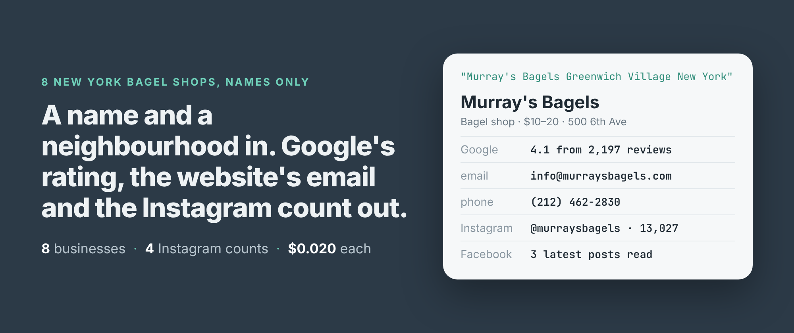
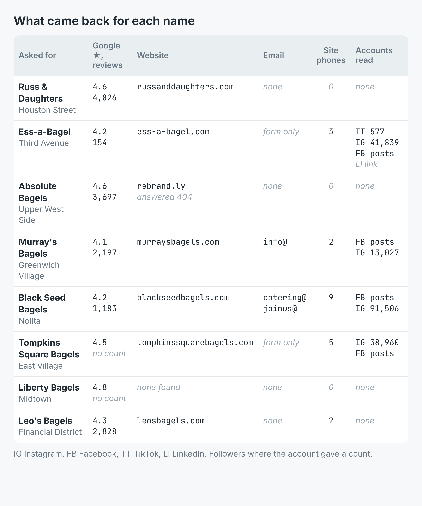
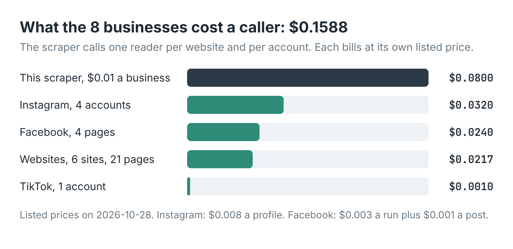

How to find a business's website, email and Instagram from just its name (8 New York bagel shops)
I wrote this with an AI assistant. The runs, numbers and code are real, and I checked them.

What can you learn about a business if all you have is its name? I typed eight New York bagel shops into a scraper, each as a name and a neighbourhood, "Murray's Bagels Greenwich Village New York" and so on, and nothing else. No website, no Maps link, no handles.
Eight rows came back in 5 minutes 51 seconds. Every one had a Google rating and a phone number. Seven had a website. Two had an email address on it, and two more only a contact form. Four had an Instagram account, read for its follower count and its three latest posts. A caller would pay 15.9 cents for the lot.
Three of the eight rows had something wrong in them, too, and those are worth as much of your attention as the good ones.
One row, three sources
I build and run a business profile scraper on Apify. Each name goes through three steps. First a Google search, whose knowledge panel holds the rating, review count, category, address, phone and website. Then the website itself, read for every email, phone number, contact form and social link it publishes. Then each linked social account, opened and read for followers and the latest posts. It all comes back as one row per business.
import { ApifyClient } from 'apify-client';
const client = new ApifyClient({ token: process.env.APIFY_TOKEN });
const queries = [
'Ess-a-Bagel Third Avenue New York',
"Murray's Bagels Greenwich Village New York",
];
const run = await client.actor('simple.actor/business-profile')
.call({ queries, maxSocialProfiles: 3 });
const { items } = await client
.dataset(run.defaultDatasetId).listItems();
for (const b of items) console.log(b.name, b.email, b.phone);
The neighbourhood matters. A bare name in a big city often matches the wrong branch, and one of my eight shows what that looks like.

What came back for each name. Instagram follower counts as the rows carried them.What the names turned into
Google was the strongest part. All 8 searches found a knowledge panel, all 8 had a rating and a phone number, and 7 had an address. Six of the eight had a review count, 14,885 reviews between them, from Ess-a-Bagel's 154 to Russ & Daughters' 4,826.
The websites gave less. Six of the seven sites could be read, 21 pages in all. Murray's Bagels publishes info@murraysbagels.com, and Black Seed Bagels two role addresses, catering@ and joinus@. Ess-a-Bagel and Tompkins Square Bagels publish no address but have a contact form, and the row says where it is in contactFormUrl. Five sites had phone numbers, 21 between them. Black Seed's had 9, all of them on the page for its Nolita shop.
The social step read 9 accounts on 4 businesses. Instagram came back for all four, from Murray's 13,027 followers to Black Seed's 91,506. Ess-a-Bagel also had TikTok, at 577 followers. Every Instagram and TikTok account had posted within the last week, and each row carries the three latest posts with their text, link and date.
Ess-a-Bagel also linked a LinkedIn page, its fourth account. With maxSocialProfiles at 3 it came back as a link and a handle, not read. That setting is a ceiling on the slowest and dearest part of the run, so a list of hundreds of businesses can't run away from you.
What it cost
This scraper charges $0.01 a business. It then calls one reader per website and per social account, and each of those bills its own listed price to the same caller. For these eight, at the prices listed on 28 October 2026, that came to $0.15875:

Where the 15.9 cents went. Instagram, at $0.008 a profile, is the dearest account to read.That's about 2 cents a business. Instagram is the line to watch: four profiles cost $0.032, more than all six websites. Turn the social step off with includeSocialProfiles: false and these eight would have cost $0.10175, the place record and the website contacts only.
Three rows that need a second look
Liberty Bagels. I asked for the Midtown shop. Google's panel gave an address at 32 Broadway, New York, NY 10004, which is in the Financial District, nowhere near Midtown. It found no website, gave no review count, and the row's name is my own query because the panel didn't title the business. My search wasn't specific enough. A street name would have fixed it.
Absolute Bagels. Google lists its website as a rebrand.ly short link, and the link answered 404. The row says so in notes, and has no email, no site phones and no social accounts as a result. Its category reads "More info", which is a button label on Google's panel, not a category. Black Seed's row has the same "More info".
Russ & Daughters. The website was found and four of its pages were read, and the row came back with no email, no phone from the site and no social accounts, with nothing in notes to say why. Google's phone number is still on the row. Treat an empty website section with an empty notes as "nothing found", not as "nothing there".
Smaller things. Tompkins Square Bagels' row has no review count, and its name is my query, the same panel gap as Liberty's. Black Seed's website gave a postal address for its Rockefeller Plaza shop rather than Nolita's: the site's own markup names that one. Facebook pages come back with their latest posts but no follower count, and the row says so; one of them came back with a display name that wasn't the shop's. Instagram posts come back without like counts. And each Instagram account carries a follower count next to a note saying Instagram publishes none to a logged-out reader. The number is what came back; the note contradicts it. I'd check one by hand before quoting them anywhere.
Making it yours
The input is a list of names with a place on each. Swap the bagel shops for the gyms in your town, the dentists on your sales list, the competitors you watch. Put the street in when a chain has several branches. If you already have the websites, pass them as websites instead and the Google step is skipped. And if all you need is the phone and the email, turn the social step off and save the Instagram money.
The full script, in Node and Python, writes a CSV with one column per platform and is in the example repo on GitHub. The scraper is Business Profile Scraper on Apify.